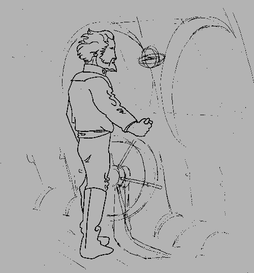
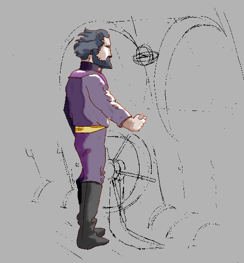
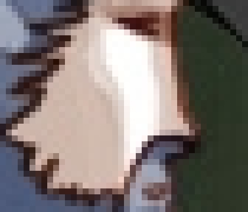
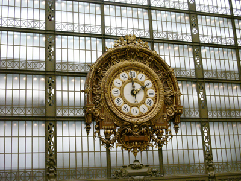
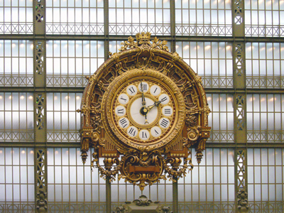
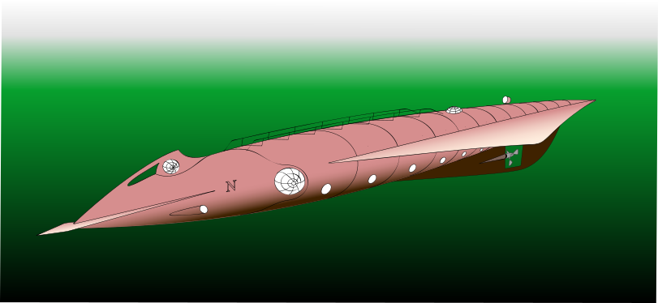
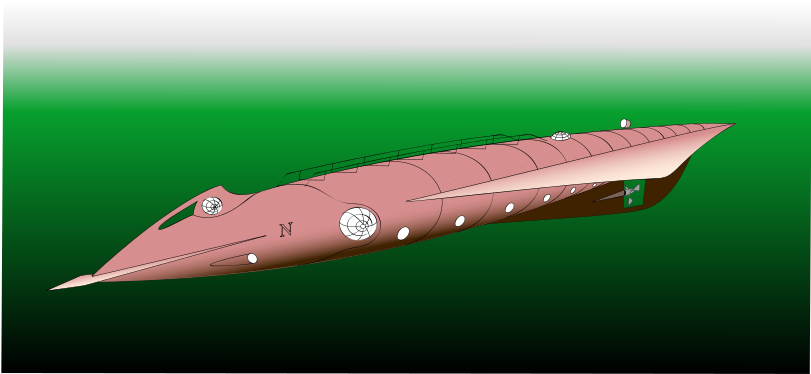
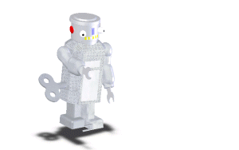

Différentes techniques pour illustrer une page web...
1. Le dessin Bitmap
 . .
Dessin B. Jardel 2004. Croquis au feutre scanné, puis colorisé avec paint.net, enregistré au format GIF
Un agrandissement permet de voir les petits pixels
2. La photographie numérique : une mosaïque de pixels
 .
Photographie B. Jardel, 2004. Correction de perspective, balance des couleurs...
Votre appareil photo numérique fabrique un fichier au format Jpeg
3. Le dessin vectoriel
ici vous pouvez comparer une image bitmap et une image vectorielle : zoomer avec un clic droit.

Dessin bitmap, format PNG - 2374ko

Dessin vectoriel, format SVG - 82ko4. L'image de synthèse ou la modélisation 3D
5. Les animations par enchainement d'images bitmap

Captures d'écran enchainées avec Gif Animator, Gif animé